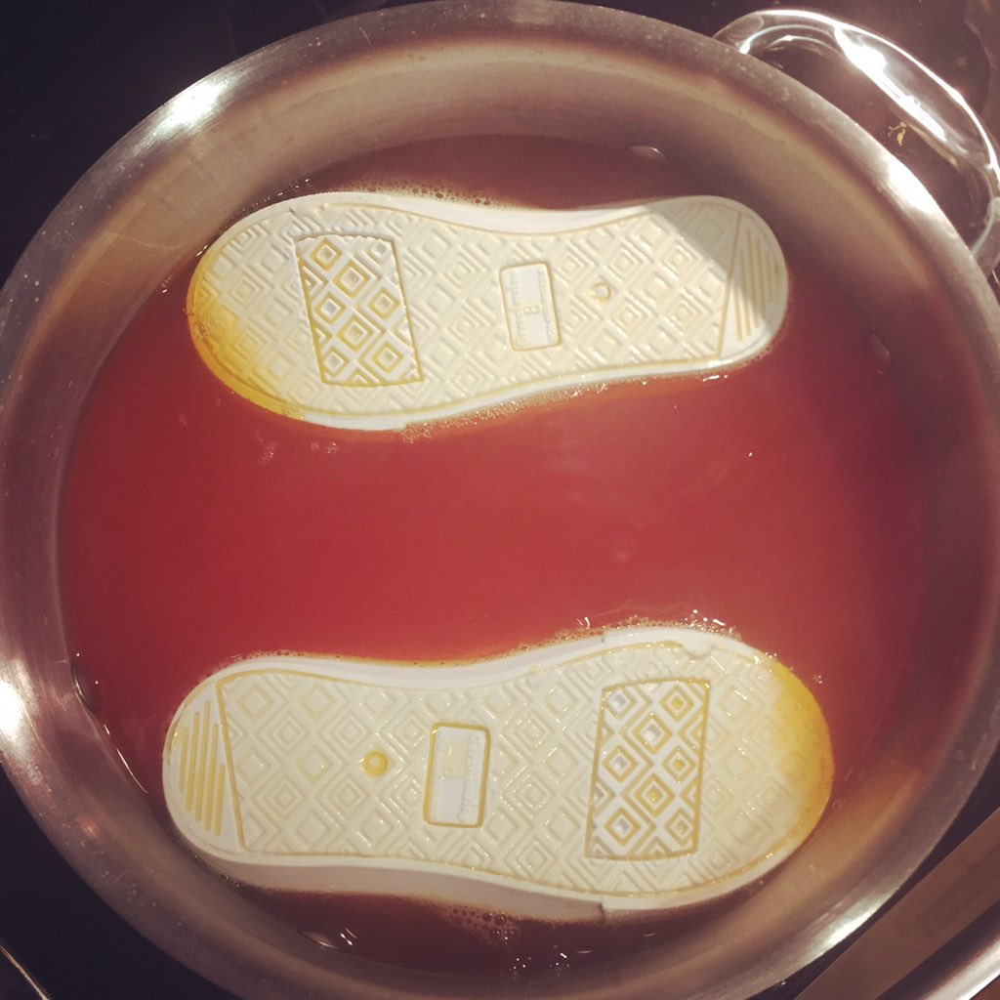

Leather Shoe Stew Recipe

Intro
Times, they get harsh.
You don't always have the money to eat gourmet.
But being broke don't mean you can't eat good!
Here we have an opulent delicacy, a rich stew made from your very
shoes.
Ingredients
- A pair of leather shoes.
- Salt
- Water
Procedure
Finally getting to the fun part.
- Heat some water in a pan.
- Add salt and let it heat.
- Throw in those shoes!
- PS: Dont bother cleaning the shoes, dirt is just extra seasoning!
- Heat till water is absorbed by shoes.
- Enjoy!